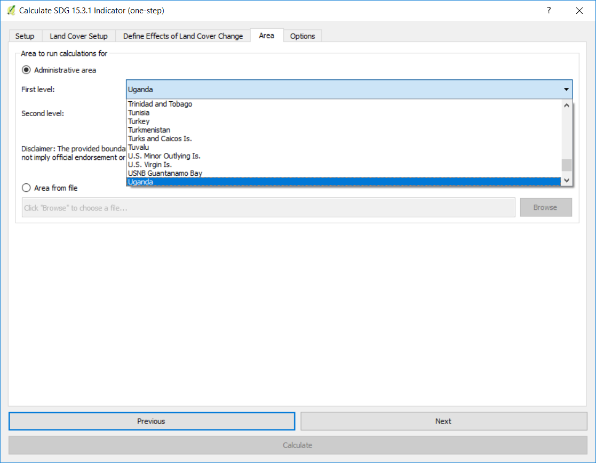

Exécuter des sous-indicateurs en une étape¶
Objectif: Apprenez comment exécuter les sous-indicateurs SDG 15.3.1 (changements dans la productivité des terres, la couverture terrestre et le carbone organique du sol) en utilisant Trends.Earth et les données par défaut: LPD du CCR pour la productivité des terres, ESA CCI pour les terres couverture, et SoilGrids pour le carbone organique du sol. Dans ce tutoriel, nous utiliserons l’Ouganda comme exemple, mais vous pouvez choisir n’importe quelle zone d’étude.
** Temps d'exécution estimé **: 35 minutes
Accès Internet: Obligatoire
Recherchez la barre d’outils Trends.Earth dans QGIS, puis cliquez sur l’icône Calculer (
 ).
).

Le menu ** Calculer indicateurs ** s'ouvre. Dans cette fenêtre, cliquez sur Indicateur de dégradation des terres (indicateur SDG 15.3.1).

Sélectionnez ** Calculez les trois sous-indicateurs en une seule étape ** bouton situé sous Étape 1 - Option 1.

Dans l’onglet Configuration, sélectionnez les années d’analyse (2000-2015) et assurez-vous que les données par défaut UNCCD sont sélectionnées, puis cliquez sur Suivant.
Note
Reportez-vous à la section: ref: indicator-15-3-1 de ce manuel pour en savoir plus sur les indicateurs de productivité Trends.Earth développés à la suite du Guide de bonnes pratiques de la CCD (UNGD).

Dans l’onglet Land Cover Setup vous pouvez utiliser la méthode d’agrégation par défaut proposée par les données par défaut de la UNCCD ou vous pouvez personnaliser l’agrégation de la légende des classes de couverture terrestre originale de l’ESA CCI aux 7 requises pour les rapports UNCCD . Pour le personnaliser, cliquez sur Modifier la définition et la fenêtre Agréger l’installation des données de couverture terrestre s’ouvrira.
Dans cette fenêtre, vous verrez la classe de couverture terrestre originale ESA CCI dans la colonne Input class et l’agrégation finale dans la colonne Output class. Pour modifier la classe de sortie, cliquez simplement sur la flèche déroulante à côté de la couleur et sélectionnez la classe de sortie finale à laquelle vous souhaitez réaffecter la classe d’entrée. Notez que cette étape n’est nécessaire que si vous considérez que le schéma d’agrégation par défaut ne représente pas les conditions de votre zone d’étude.
Lorsque vous avez terminé, cliquez sur Enregistrer le fichier de définition. Cette option vous fera gagner du temps la prochaine fois que vous lancerez l’outil, en chargeant simplement le fichier de définition précédemment enregistré.
Cliquez sur Enregistrer pour continuer

Vous reviendrez à l’onglet Land Cover Setup, cliquez sur Next.
L’onglet Définir les effets de la couverture des terres est l’endroit où vous définissez la signification de chaque transition de couverture terrestre en termes de dégradation. Les transitions indiquées en rouge (signe moins) seront identifiées comme dégradation dans la sortie finale, les transitions en beige (zéro) seront identifiées comme stables et les transitions en vert (signe plus) seront identifiées comme des améliorations.
Par exemple, par défaut, on considère qu’un pixel qui a changé de Prairie à Arbre couvert sera considéré comme amélioré. Cependant, si dans votre zone d’étude l’empiètement des plantes ligneuses est un processus de dégradation, cette transition devrait être changée pour cette zone d’étude particulière en dégradation (signe moins).
Si vous n’avez apporté aucune modification à la matrice par défaut, cliquez simplement sur Suivant.
Si vous avez modifié la signification de certaines transitions, cliquez sur Enregistrer la table dans le fichier… pour enregistrer la définition pour une utilisation ultérieure. Puis cliquez sur Suivant.

Dans l’onglet Zone, définissez la zone d’analyse. Il y a deux options:
Utiliser les limites de pays et d’état fournies: Si vous souhaitez utiliser cette option, assurez-vous que l’option Zone administrative est sélectionnée, puis sélectionnez Premier niveau (pays) ou Deuxième niveau (état ou province selon le pays).
Note
Les Natural Earth Administrative Boundaries fournies dans Trends.Earth sont dans le public domain. Les limites et les noms utilisés, ainsi que les désignations utilisées, dans Trends.Earth n’impliquent pas l’approbation officielle ou l’acceptation par Conservation International Foundation, ou par ses organisations partenaires et contributeurs.
Si vous utilisez Trends.Earth à des fins officielles, il est recommandé de choisir une frontière officielle fournie par le bureau désigné de votre pays.

Utilisez votre propre fichier de zone: Si vous souhaitez utiliser votre propre zone d’analyse, assurez-vous que l’option Area from file est en surbrillance. Cliquez ensuite sur Parcourir et naviguez jusqu’au dossier de votre ordinateur où vous avez stocké le fichier.
Lorsque vous avez sélectionné la zone pour laquelle vous souhaitez calculer les indicateurs, cliquez sur Suivant.
Dans l’onglet Options, vous pouvez définir le nom de la tâche et créer Notes pour identifier l’analyse que vous exécutez. Quelle information à indiquer est facultative, mais nous suggérons de noter:
Domaine d’analyse
Rendez-vous
Les indicateurs fonctionnent
Lorsque vous avez terminé, cliquez sur Calculer et la tâche sera envoyée à Google Earth Engine pour les calculs. Vous remarquerez que la fenêtre Calculer l’indicateur SDG 15.3.1 (une étape) disparaîtra et vous serez redirigé vers QGIS.

Une barre bleue claire s’affiche temporairement, indiquant que la tâche a été envoyée avec succès. L’analyse sera effectuée sur les serveurs de Google et pourrait prendre entre 5 et 15 minutes selon la taille de la zone d’étude (les zones plus grandes ont tendance à prendre plus de temps).
Note
Reportez-vous au tutoriel Statut de la tâche et téléchargement pour obtenir des instructions sur la façon de vérifier l’état des tâches soumises et de télécharger les résultats de Trends.Earth.